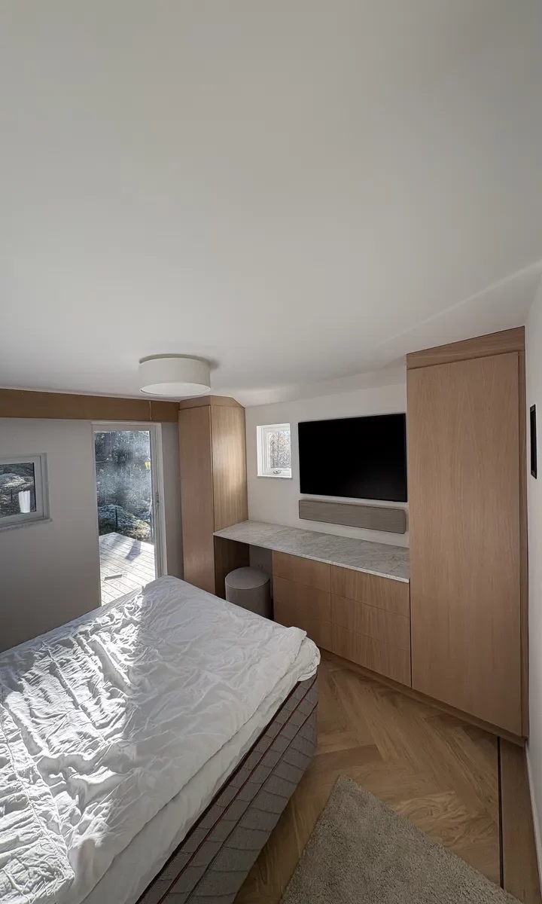

Byggfirma i Uppsala
En partner genom hela bygget.
Vi hjälper dig med byggfirma i Uppsala. Hör av dig så går vi igenom platsen och förutsättningarna för ditt projekt.
Offertförfrågan
Genomtänkt.
Hela vägen.
C27 Bygg AB arbetar med nybyggnation, ombyggnation och renovering för privatpersoner och företag. Vi tar hand om både bostäder och kommersiella miljöer. Tydlig samordning och kontinuerlig kontakt håller ihop projektets olika delar.
Vi planerar arbetet tillsammans, håller dig informerad och följer upp resultatet. Materialval, tid, kostnad och garantivillkor går vi igenom för ditt uppdrag.

Frågor om
byggfirma.
Vad hjälper ni till med?
Allt från mindre renoveringar till större byggprojekt och specialanpassningar.
Hur tar vi första steget?
Ring Carl på 073-522 32 74. Vi går igenom idén och underlaget för en offert.
Var arbetar ni?
I Uppsala, Enköping och Stockholmsområdet. Du hittar samtliga orter nedan.
Vilka fastigheter arbetar ni med?
Både bostäder och kommersiella fastigheter, beroende på uppdragets behov.
Hur arbetar ni med kvalitet?
Erfarna hantverkare, utvalda material, en tydlig arbetsprocess och löpande kommunikation.